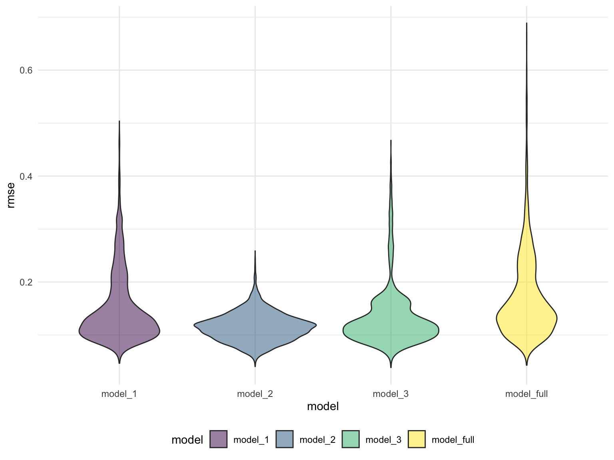

Regression Analysis
General Idea:
In USA Drug Overdoes Analyzing, we made a comprehensive analysis for the crude death rate resulted from drug overdose in us. We compared the change of death rate for different states in different years. Here in regression analysis, our goal is trying to build a regression model which explains the variances of drug overdose death rate among different states. The possible predictors are from social economic index and behavior statistics of residents for fifty states and Washington D.C.. We only use drug overdose death rate from 2015 - 2019 to guarantee the data availability for possible predictors.
Possible Predictors
Poverty Rate: The poverty data is from United States Census Bureau. We imported and cleaned to get the poverty rate for fifty states and Washington D.C. from 2015 - 2019. Then, we take an average of the poverty rate for 5 years.
## load the poverty rate data from 2015-2019
poverty_2015 =
read_csv("data_regression_us/povety/poverty_us_2015.csv") %>%
select(NAME, S1701_C03_001E)
poverty_2015 =
poverty_2015[-1,] %>%
mutate(
poverty_population_2015 = as.numeric(S1701_C03_001E),
state = NAME
) %>%
select(-c(NAME, S1701_C03_001E)) %>%
relocate(state)
poverty_2016 =
read_csv("data_regression_us/povety/poverty_us_2016.csv") %>%
select(NAME, S1701_C03_001E)
poverty_2016 =
poverty_2016[-1,] %>%
mutate(
poverty_population_2016 = as.numeric(S1701_C03_001E),
state = NAME
) %>%
select(-c(NAME, S1701_C03_001E)) %>%
relocate(state)
poverty_2017 =
read_csv("data_regression_us/povety/poverty_us_2017.csv") %>%
select(NAME, S1701_C03_001E)
poverty_2017 =
poverty_2017[-1,] %>%
mutate(
poverty_population_2017 = as.numeric(S1701_C03_001E),
state = NAME
) %>%
select(-c(NAME, S1701_C03_001E)) %>%
relocate(state)
poverty_2018 =
read_csv("data_regression_us/povety/poverty_us_2018.csv") %>%
select(NAME, S1701_C03_001E)
poverty_2018 =
poverty_2018[-1,] %>%
mutate(
poverty_population_2018 = as.numeric(S1701_C03_001E),
state = NAME
) %>%
select(-c(NAME, S1701_C03_001E)) %>%
relocate(state)
poverty_2019 =
read_csv("data_regression_us/povety/poverty_us_2019.csv") %>%
select(NAME, S1701_C03_001E)
poverty_2019 =
poverty_2019[-1,] %>%
mutate(
poverty_population_2019 = as.numeric(S1701_C03_001E),
state = NAME
) %>%
select(-c(NAME, S1701_C03_001E)) %>%
relocate(state)
## combine the datasets, take average
poverty_overall =
join_all(list(poverty_2019, poverty_2018, poverty_2017, poverty_2016, poverty_2015))
poverty_overall =
poverty_overall %>%
mutate(sum_of_rows = rowSums((poverty_overall[,2:6]), na.rm = TRUE),
mean_poverty_rate = 0.01 * sum_of_rows/5) %>%
select(state, mean_poverty_rate)Population: The population data is from United States Census Bureau. We imported the population data for fifty states and Washington D.C. from 2020 United States census. Here we do not count population as a predictors. This data is only used to compute other predictors from available data.
population_us =
read_csv("data_regression_us/population/ACSDT5Y2019.B01003_data_with_overlays_2021-11-16T170855.csv")
population_us =
population_us[-1,] %>%
mutate(
state = NAME,
population = as.numeric(B01003_001E)
) %>%
select(state, population)Education Rate: The education data is from United States Census Bureau. We imported the date for fifty states and Washington D.C. from 2015 - 2019. It contains the number of population with different education level. We consider bachelor’s education as the threshold of “high education”. Therefore, we sum-up the number of people who has a bachelor or above degree. Then, we take an average of the number for 5 years. And the education rate can be calculated by dividing the high-educated population with the total population. Here education rate means that the proportion of population who receive bachelor’s or higher education.
## load the education data from 2015-2019
education_2015 =
read_csv("data_regression_us/education/education_us_2015.csv")
education_2015 =
education_2015[-1,] %>%
select(B15003_022E, B15003_023E, B15003_024E, B15003_025E, NAME) %>%
mutate(
number_bachelor = as.numeric(B15003_022E),
number_master = as.numeric(B15003_023E),
number_profesional = as.numeric(B15003_024E),
number_doctor = as.numeric(B15003_025E),
state = NAME
) %>%
select(state, number_bachelor, number_master, number_profesional, number_doctor) %>%
mutate(sum_high_educ_2015 = number_bachelor + number_master + number_profesional + number_doctor) %>%
select(state, sum_high_educ_2015)
education_2016 =
read_csv("data_regression_us/education/education_us_2016.csv")
education_2016 =
education_2016[-1,] %>%
select(B15003_022E, B15003_023E, B15003_024E, B15003_025E, NAME) %>%
mutate(
number_bachelor = as.numeric(B15003_022E),
number_master = as.numeric(B15003_023E),
number_profesional = as.numeric(B15003_024E),
number_doctor = as.numeric(B15003_025E),
state = NAME
) %>%
select(state, number_bachelor, number_master, number_profesional, number_doctor) %>%
mutate(sum_high_educ_2016 = number_bachelor + number_master + number_profesional + number_doctor) %>%
select(state, sum_high_educ_2016)
education_2017 =
read_csv("data_regression_us/education/education_us_2017.csv")
education_2017 =
education_2017[-1,] %>%
select(B15003_022E, B15003_023E, B15003_024E, B15003_025E, NAME) %>%
mutate(
number_bachelor = as.numeric(B15003_022E),
number_master = as.numeric(B15003_023E),
number_profesional = as.numeric(B15003_024E),
number_doctor = as.numeric(B15003_025E),
state = NAME
) %>%
select(state, number_bachelor, number_master, number_profesional, number_doctor) %>%
mutate(sum_high_educ_2017 = number_bachelor + number_master + number_profesional + number_doctor) %>%
select(state, sum_high_educ_2017)
education_2018 =
read_csv("data_regression_us/education/education_us_2018.csv")
education_2018 =
education_2018[-1,] %>%
select(B15003_022E, B15003_023E, B15003_024E, B15003_025E, NAME) %>%
mutate(
number_bachelor = as.numeric(B15003_022E),
number_master = as.numeric(B15003_023E),
number_profesional = as.numeric(B15003_024E),
number_doctor = as.numeric(B15003_025E),
state = NAME
) %>%
select(state, number_bachelor, number_master, number_profesional, number_doctor) %>%
mutate(sum_high_educ_2018 = number_bachelor + number_master + number_profesional + number_doctor) %>%
select(state, sum_high_educ_2018)
education_2019 =
read_csv("data_regression_us/education/education_us_2019.csv")
education_2019 =
education_2019[-1,] %>%
select(B15003_022E, B15003_023E, B15003_024E, B15003_025E, NAME) %>%
mutate(
number_bachelor = as.numeric(B15003_022E),
number_master = as.numeric(B15003_023E),
number_profesional = as.numeric(B15003_024E),
number_doctor = as.numeric(B15003_025E),
state = NAME
) %>%
select(state, number_bachelor, number_master, number_profesional, number_doctor) %>%
mutate(sum_high_educ_2019 = number_bachelor + number_master + number_profesional + number_doctor) %>%
select(state, sum_high_educ_2019)
## combine to produce overall education data, take average for 5 years
education_overall =
join_all(list(education_2019, education_2018, education_2017, education_2016, education_2015))
education_overall =
education_overall %>%
mutate(sum_of_rows = rowSums((education_overall[,2:6]), na.rm = TRUE),
mean_educ = sum_of_rows/5) %>%
select(state, mean_educ)
## compute education rate
education_rate =
left_join(education_overall, population_us) %>%
mutate(education_rate = mean_educ / population) %>%
select(state, education_rate)Unemployment Rate: The unemployment data is from United States Census Bureau. We imported and cleaned to get the unemployment rate for fifty states and Washington D.C. from 2015 - 2019. Then, we take an average of the unemployment rate for 5 years.
## load the unemployment 2015-2019
unemployment_2015 =
read_csv("data_regression_us/unemployment/unemployment_2015.csv")
unemployment_2015 =
unemployment_2015[-1,] %>%
select(NAME, S2301_C04_001E) %>%
mutate(
unemployment_rate_2015 = as.numeric(S2301_C04_001E),
state = NAME
) %>%
select(state, unemployment_rate_2015)
unemployment_2016 =
read_csv("data_regression_us/unemployment/unemployment_2016.csv")
unemployment_2016 =
unemployment_2016[-1,] %>%
select(NAME, S2301_C04_001E) %>%
mutate(
unemployment_rate_2016 = as.numeric(S2301_C04_001E),
state = NAME
) %>%
select(state, unemployment_rate_2016)
unemployment_2017 =
read_csv("data_regression_us/unemployment/unemployment_2017.csv")
unemployment_2017 =
unemployment_2017[-1,] %>%
select(NAME, S2301_C04_001E) %>%
mutate(
unemployment_rate_2017 = as.numeric(S2301_C04_001E),
state = NAME
) %>%
select(state, unemployment_rate_2017)
unemployment_2018 =
read_csv("data_regression_us/unemployment/unemployment_2018.csv")
unemployment_2018 =
unemployment_2018[-1,] %>%
select(NAME, S2301_C04_001E) %>%
mutate(
unemployment_rate_2018 = as.numeric(S2301_C04_001E),
state = NAME
) %>%
select(state, unemployment_rate_2018)
unemployment_2019 =
read_csv("data_regression_us/unemployment/unemployment_2019.csv")
unemployment_2019 =
unemployment_2019[-1,] %>%
select(NAME, S2301_C04_001E) %>%
mutate(
unemployment_rate_2019 = as.numeric(S2301_C04_001E),
state = NAME
) %>%
select(state, unemployment_rate_2019)
## combine to overall unemployment df, take average of unemployment rate for 5 years
unemployment_overall =
join_all(list(unemployment_2019, unemployment_2018, unemployment_2017, unemployment_2016, unemployment_2015))
unemployment_overall =
unemployment_overall %>%
mutate(sum_of_rows = rowSums((unemployment_overall[,2:6]), na.rm = TRUE),
mean_unemployment_rate = 0.01 * sum_of_rows/5) %>%
select(state, mean_unemployment_rate)Crude Divorce Rate: The divorce data is from United States Census Bureau. We imported the date for fifty states and Washington D.C. from 2015 - 2019. It contains the number of population who divorce with their partners. We take an average of the number for 5 years. And the crude divorce rate can be calculated by dividing the divorced population with the total population.
## load the divorce count data from 2015-2019
divorce_2015 =
read_csv("data_regression_us/divorce/divorce_number_2015.csv")
divorce_2015 =
divorce_2015[-1,] %>%
select(NAME, B12503_001E) %>%
mutate(
divorce_num_2015 = as.numeric(B12503_001E),
state = NAME
) %>%
select(state, divorce_num_2015)
divorce_2016 =
read_csv("data_regression_us/divorce/divorce_number_2016.csv")
divorce_2016 =
divorce_2016[-1,] %>%
select(NAME, B12503_001E) %>%
mutate(
divorce_num_2016 = as.numeric(B12503_001E),
state = NAME
) %>%
select(state, divorce_num_2016)
divorce_2017 =
read_csv("data_regression_us/divorce/divorce_number_2017.csv")
divorce_2017 =
divorce_2017[-1,] %>%
select(NAME, B12503_001E) %>%
mutate(
divorce_num_2017 = as.numeric(B12503_001E),
state = NAME
) %>%
select(state, divorce_num_2017)
divorce_2018 =
read_csv("data_regression_us/divorce/divorce_number_2018.csv")
divorce_2018 =
divorce_2018[-1,] %>%
select(NAME, B12503_001E) %>%
mutate(
divorce_num_2018 = as.numeric(B12503_001E),
state = NAME
) %>%
select(state, divorce_num_2018)
divorce_2019 =
read_csv("data_regression_us/divorce/divorce_number_2019.csv")
divorce_2019 =
divorce_2019[-1,] %>%
select(NAME, B12503_001E) %>%
mutate(
divorce_num_2019 = as.numeric(B12503_001E),
state = NAME
) %>%
select(state, divorce_num_2019)
## combine 5 df to a overall divorce count df, take average for 5 years
divorce_overall =
join_all(list(divorce_2019, divorce_2018, divorce_2017, divorce_2016, divorce_2015))
divorce_overall =
divorce_overall %>%
mutate(sum_of_rows = rowSums((divorce_overall[,2:6]), na.rm = TRUE),
mean_divorce_num = sum_of_rows/5) %>%
select(state, mean_divorce_num)
## compute crude divorce rate
divorce_rate =
left_join(divorce_overall, population_us) %>%
mutate(divorce_rate = mean_divorce_num / population) %>%
select(state, divorce_rate)Smoke Rate: The smoke rate data is from America’s Health Rankings. The smoke rate is defined as “the percentage of adults who reported smoking at least 100 cigarettes in their lifetime and currently smoke daily or some days”. We imported and clean to get the smoke rate for fifty states and Washington D.C. from 2015 - 2019. Then, we take an average of the smoke rate for 5 years.
smoke_rate =
read_excel("data_regression_us/smoke/smoke_rate.xlsx")
smoke_rate =
smoke_rate %>%
mutate(sum_of_rows = rowSums((smoke_rate[,2:6]), na.rm = TRUE),
mean_smoke_rate = sum_of_rows/5) %>%
select(state, mean_smoke_rate)Binge Drinking: Binge drinking data is collected from Statista. Binge drinking prevalence for the 51 jurisdictions (50 states and Washington D.C.). The prevalence of binge drinking is defined as number of binge drinker over the whole population within each jurisdiction.
state_level = c(state.name[1:8], "District of Columbia", state.name[9:50])
drinking_19 =
read_excel("./data/statistic_id378966_us-binge-drinking-among-adults-by-state-2019.xlsx", range = "Data!B3:C57") %>%
janitor::clean_names() %>%
slice(-c(1,2)) %>%
mutate(binge_drink_rate = 0.01 * as.numeric(x2)) %>%
select(state = u_s_binge_drinking_among_adults_by_state_2019, binge_drink_rate)Crude Death Rate: Mentioned in the USA overview section as well. In a few words, it is the number of deaths due to drug overdose per 100,000 people.
crudedeath_rate =
read.csv("./data/agegroup_race_state_year_99-19.csv") %>%
janitor::clean_names() %>%
select(state, year = year_code, age = ten_year_age_groups_code, race, deaths,population) %>%
drop_na() %>%
filter(year %in% c("2015", "2016", "2017", "2018", "2019")) %>%
group_by(state) %>%
dplyr::summarize(total_deaths = sum(deaths),
total_population = sum(population)) %>%
mutate(crudedeath_rate = 0.01 * (total_deaths/total_population) * 100000) %>%
select(state, crudedeath_rate)Regression Analyses
Regression Overall Data
The regression overall data is produced by combining the dataset generated above. For each state, this data contains the response – the crude death rate for drug overdose and all possible predictors – binge drinking rate, divorce rate, unemployment rate, education rate, poverty rate, and smoke rate. The following tables describe this data:
overall_regression_view =
join_all(list(crudedeath_rate, drinking_19, divorce_rate, unemployment_overall, education_rate, poverty_overall, smoke_rate))
overall_regression =
overall_regression_view %>%
select(-state)
overall_regression_view %>% head(10) %>% knitr::kable(caption = "The First 10 Rows of Regression Overall Data")| state | crudedeath_rate | binge_drink_rate | divorce_rate | mean_unemployment_rate | education_rate | mean_poverty_rate | mean_smoke_rate |
|---|---|---|---|---|---|---|---|
| Alabama | 0.2270304 | 0.136 | 0.8151100 | 0.0598 | 0.1718737 | 0.1696 | 0.2082 |
| Alaska | 0.2663021 | 0.182 | 0.7901922 | 0.0722 | 0.1932690 | 0.1046 | 0.1962 |
| Arizona | 0.2960310 | 0.165 | 0.8070829 | 0.0594 | 0.1959374 | 0.1524 | 0.1496 |
| Arkansas | 0.2089063 | 0.149 | 0.8054663 | 0.0516 | 0.1530968 | 0.1722 | 0.2364 |
| California | 0.1640786 | 0.183 | 0.8119989 | 0.0606 | 0.2273319 | 0.1350 | 0.1160 |
| Colorado | 0.2309491 | 0.196 | 0.8134724 | 0.0434 | 0.2791094 | 0.1034 | 0.1520 |
| Connecticut | 0.4042932 | 0.177 | 0.8321996 | 0.0604 | 0.2712121 | 0.1006 | 0.1342 |
| Delaware | 0.6017141 | 0.189 | 0.6596654 | 0.0542 | 0.2215250 | 0.1230 | 0.1770 |
| District of Columbia | 0.8842317 | 0.272 | 0.8416479 | 0.0692 | 0.4124074 | 0.1644 | 0.1508 |
| Florida | 0.2746527 | 0.180 | 0.8358681 | 0.0564 | 0.2120040 | 0.1414 | 0.1590 |
summary(overall_regression_view) %>% knitr::kable(caption = "Summary of The Response and The Predictors")| state | crudedeath_rate | binge_drink_rate | divorce_rate | mean_unemployment_rate | education_rate | mean_poverty_rate | mean_smoke_rate | |
|---|---|---|---|---|---|---|---|---|
| Length:51 | Min. :0.1182 | Min. :0.1200 | Min. :0.6597 | Min. :0.02740 | Min. :0.1449 | Min. :0.0762 | Min. :0.0910 | |
| Class :character | 1st Qu.:0.2057 | 1st Qu.:0.1653 | 1st Qu.:0.8043 | 1st Qu.:0.04270 | 1st Qu.:0.1873 | 1st Qu.:0.1092 | 1st Qu.:0.1511 | |
| Mode :character | Median :0.2710 | Median :0.1865 | Median :0.8143 | Median :0.05320 | Median :0.2061 | Median :0.1306 | Median :0.1718 | |
| NA | Mean :0.3015 | Mean :0.1858 | Mean :0.8110 | Mean :0.05128 | Mean :0.2153 | Mean :0.1321 | Mean :0.1752 | |
| NA | 3rd Qu.:0.3561 | 3rd Qu.:0.2010 | 3rd Qu.:0.8223 | 3rd Qu.:0.05900 | 3rd Qu.:0.2357 | 3rd Qu.:0.1502 | 3rd Qu.:0.1961 | |
| NA | Max. :0.8842 | Max. :0.2720 | Max. :0.8478 | Max. :0.07460 | Max. :0.4124 | Max. :0.2038 | Max. :0.2568 | |
| NA | NA | NA’s :1 | NA | NA | NA | NA | NA |
Correlation Matrix
corr_matrix =
overall_regression %>%
chart.Correlation(histogram = TRUE, method = "pearson")
Comments:
For those variables that are strongly correlated with each other, we add their interaction into the regression model for further analysis.
Two-ways interaction we consider:
binge_drink_rate * education_rate
mean_unemployment_rate * mean_poverty_rate
education_rate * mean_poverty_rate
education_rate * mean_smoke_rate
mean_poverty_rate * mean_smoke_rate
Regression Modeling
Method:
The initial full model for crude death rate consists of all possible predictors and reasonable interaction.
Model_full: crudedeath_rate ~ binge_drink_rate + divorce_rate + mean_unemployment_rate + education_rate + mean_poverty_rate + mean_smoke_rate + binge_drink_rate * education_rate + mean_unemployment_rate * mean_poverty_rate + education_rate * mean_poverty_rate + education_rate * mean_smoke_rate + mean_poverty_rate * mean_smoke_rate
Here we are going to use two modeling method and try to generate a better regression model to explain crude death rate.
Stepwise Modeling
stepwise =
step(lm(crudedeath_rate ~ binge_drink_rate + divorce_rate + mean_unemployment_rate + education_rate + mean_poverty_rate + mean_smoke_rate + binge_drink_rate * education_rate + mean_unemployment_rate * mean_poverty_rate + education_rate * mean_poverty_rate + education_rate * mean_smoke_rate + mean_poverty_rate * mean_smoke_rate, data = overall_regression),direction = "both", trace = 0)Based on the stepwise results, the best model is model_1.
Model_1: crudedeath_rate ~ binge_drink_rate + divorce_rate + mean_unemployment_rate + education_rate + mean_poverty_rate + mean_smoke_rate + binge_drink_rate:education_rate.
This model can be described in the following parameter:
summary(stepwise) %>% broom::tidy() %>% knitr::kable()| term | estimate | std.error | statistic | p.value |
|---|---|---|---|---|
| (Intercept) | 1.0862671 | 0.6386930 | 1.7007656 | 0.0963811 |
| binge_drink_rate | -5.0101976 | 1.9933174 | -2.5134972 | 0.0158762 |
| divorce_rate | -0.8038224 | 0.5669148 | -1.4178894 | 0.1636001 |
| mean_unemployment_rate | 4.3611925 | 1.9917000 | 2.1896834 | 0.0341538 |
| education_rate | -1.8449213 | 2.1508996 | -0.8577441 | 0.3959022 |
| mean_poverty_rate | -1.3177944 | 0.9920769 | -1.3283188 | 0.1912459 |
| mean_smoke_rate | 2.0074717 | 0.6351739 | 3.1605074 | 0.0029198 |
| binge_drink_rate:education_rate | 19.5408814 | 8.8477530 | 2.2085700 | 0.0327154 |
summary(stepwise) %>% broom::glance() %>% knitr::kable()| r.squared | adj.r.squared | sigma | statistic | p.value | df | df.residual | nobs |
|---|---|---|---|---|---|---|---|
| 0.5775355 | 0.5071248 | 0.101727 | 8.202378 | 2.8e-06 | 7 | 42 | 50 |
Regsubset() Compare All Possible Models
reg_subsets =
regsubsets(crudedeath_rate ~ binge_drink_rate + divorce_rate + mean_unemployment_rate + education_rate + mean_poverty_rate + mean_smoke_rate + binge_drink_rate * education_rate + mean_unemployment_rate * mean_poverty_rate + education_rate * mean_poverty_rate + education_rate * mean_smoke_rate + mean_poverty_rate * mean_smoke_rate, data = overall_regression, nvmax = 11)
summary(reg_subsets)Method: This table describes the different statistics value for different number of predictors the model contains. For each number, regsubset() produces the best model and outputs the statistics in the following.
cri_measure =
cbind(
cp = summary(reg_subsets)$cp,
r2 = summary(reg_subsets)$rsq,
adj_r2 = summary(reg_subsets)$adjr2,
BIC = summary(reg_subsets)$bic
)
cri_measure## cp r2 adj_r2 BIC
## [1,] 20.445661 0.3055733 0.2911061 -10.4093868
## [2,] 11.206452 0.4230348 0.3984831 -15.7625966
## [3,] 6.025456 0.4980837 0.4653500 -18.8180053
## [4,] 4.252493 0.5375151 0.4964054 -18.9969573
## [5,] 3.707594 0.5641120 0.5145793 -18.0463581
## [6,] 3.253801 0.5897567 0.5325134 -17.1660816
## [7,] 4.874002 0.5937260 0.5260137 -13.7401882
## [8,] 6.364832 0.5990473 0.5208127 -10.4873898
## [9,] 8.056179 0.6022731 0.5127845 -6.9792544
## [10,] 10.000000 0.6028602 0.5010295 -3.1410960
## [11,] 12.000000 0.6028602 0.4878987 0.7709268Based on cp and adjusted r square, the “best” model contain six predictors.
Model_2: crudedeath_rate ~ mean_poverty_rate + mean_unemployment_rate:mean_poverty_rate + education_rate:mean_poverty_rate + mean_poverty_rate:mean_smoke_rate
This model can be described in the following parameter:
model_2 = lm(data = overall_regression, formula = crudedeath_rate ~ mean_poverty_rate + mean_unemployment_rate:mean_poverty_rate + education_rate:mean_poverty_rate + mean_poverty_rate:mean_smoke_rate)
summary(model_2) %>% broom::tidy() %>% knitr::kable()| term | estimate | std.error | statistic | p.value |
|---|---|---|---|---|
| (Intercept) | 0.4515386 | 0.113453 | 3.979962 | 0.0002426 |
| mean_poverty_rate | -9.9417459 | 1.908559 | -5.209033 | 0.0000043 |
| mean_poverty_rate:mean_unemployment_rate | 47.3280285 | 14.203792 | 3.332070 | 0.0017075 |
| mean_poverty_rate:education_rate | 15.3892473 | 2.762120 | 5.571534 | 0.0000013 |
| mean_poverty_rate:mean_smoke_rate | 17.1090654 | 4.248474 | 4.027108 | 0.0002093 |
summary(model_2) %>% broom::glance() %>% knitr::kable()| r.squared | adj.r.squared | sigma | statistic | p.value | df | df.residual | nobs |
|---|---|---|---|---|---|---|---|
| 0.5400631 | 0.5000686 | 0.1017048 | 13.50343 | 2e-07 | 4 | 46 | 51 |
Based on BIC, we get model_3 as the “best” model.
Model_3: crudedeath_rate ~ binge_drink_rate + divorce_rate + mean_poverty_rate + binge_drink_rate:education_rate +mean_unemployment_rate:mean_poverty_rate + mean_poverty_rate:mean_smoke_rate
This model can be described in the following parameter:
model_3 = lm(data = overall_regression, formula = crudedeath_rate ~ binge_drink_rate + divorce_rate + mean_poverty_rate + binge_drink_rate:education_rate +mean_unemployment_rate:mean_poverty_rate + mean_poverty_rate:mean_smoke_rate)
summary(model_3) %>% broom::tidy() %>% knitr::kable()| term | estimate | std.error | statistic | p.value |
|---|---|---|---|---|
| (Intercept) | 1.3111049 | 0.4582567 | 2.861071 | 0.0064940 |
| binge_drink_rate | -3.0906522 | 0.8495998 | -3.637774 | 0.0007317 |
| divorce_rate | -0.9438728 | 0.5401661 | -1.747375 | 0.0877112 |
| mean_poverty_rate | -5.8558173 | 1.8504849 | -3.164477 | 0.0028517 |
| binge_drink_rate:education_rate | 11.7665809 | 1.9885416 | 5.917191 | 0.0000005 |
| mean_poverty_rate:mean_unemployment_rate | 35.9982332 | 15.2759818 | 2.356525 | 0.0230726 |
| mean_poverty_rate:mean_smoke_rate | 15.8243553 | 3.9971993 | 3.958861 | 0.0002781 |
summary(model_3) %>% broom::glance() %>% knitr::kable()| r.squared | adj.r.squared | sigma | statistic | p.value | df | df.residual | nobs |
|---|---|---|---|---|---|---|---|
| 0.5897567 | 0.5325134 | 0.0990723 | 10.30264 | 5e-07 | 6 | 43 | 50 |
Cross Validation
We now have three candidates as considered possible “best” model for drug overdose crude death rate:
Model_1: crudedeath_rate ~ binge_drink_rate + divorce_rate + mean_unemployment_rate + education_rate + mean_poverty_rate + mean_smoke_rate + binge_drink_rate:education_rate.
Model_2: crudedeath_rate ~ mean_poverty_rate + mean_unemployment_rate:mean_poverty_rate + education_rate:mean_poverty_rate + mean_poverty_rate:mean_smoke_rate
Model_3: crudedeath_rate ~ binge_drink_rate + divorce_rate + mean_poverty_rate + binge_drink_rate:education_rate +mean_unemployment_rate:mean_poverty_rate + mean_poverty_rate:mean_smoke_rate
In cross validation process, we are going to compare the cross-validated prediction error for three model and their result with initial full model.
train_df = sample_n(overall_regression, 41)
test_df = anti_join(overall_regression, train_df)
set.seed(1)
cv_modeling_df =
crossv_mc(overall_regression, 5000) %>%
mutate(
train = map(train, as_tibble),
test = map(test, as_tibble)
) %>%
mutate(
model_1 = map(.x = train, ~lm(crudedeath_rate ~ binge_drink_rate + divorce_rate + mean_unemployment_rate + education_rate + mean_poverty_rate + mean_smoke_rate + binge_drink_rate:education_rate, data = .x)),
model_2 = map(.x = train, ~lm(crudedeath_rate ~ mean_poverty_rate + mean_unemployment_rate:mean_poverty_rate + education_rate:mean_poverty_rate + mean_poverty_rate:mean_smoke_rate, data = .x)),
model_3 = map(.x = train, ~lm(crudedeath_rate ~ binge_drink_rate + divorce_rate + mean_poverty_rate + binge_drink_rate:education_rate +mean_unemployment_rate:mean_poverty_rate + mean_poverty_rate:mean_smoke_rate, data = .x)),
model_full = map(.x = train, ~lm(crudedeath_rate ~ binge_drink_rate + divorce_rate + mean_unemployment_rate + education_rate + mean_poverty_rate + mean_smoke_rate + binge_drink_rate * education_rate + mean_unemployment_rate * mean_poverty_rate + education_rate * mean_poverty_rate + education_rate * mean_smoke_rate + mean_poverty_rate * mean_smoke_rate, data = .x))
) %>%
mutate(
rmse_model_1 = map2_dbl(.x = model_1, .y = test, ~rmse(model = .x, data = .y)),
rmse_model_2 = map2_dbl(.x = model_2, .y = test, ~rmse(model = .x, data = .y)),
rmse_model_3 = map2_dbl(.x = model_3, .y = test, ~rmse(model = .x, data = .y)),
rmse_model_full = map2_dbl(.x = model_full, .y = test, ~rmse(model = .x, data = .y))
)
cv_modeling_output =
cv_modeling_df %>%
select(.id, starts_with("rmse")) %>%
pivot_longer(
rmse_model_1:rmse_model_full,
names_to = "model",
values_to = "rmse",
names_prefix = "rmse_"
) %>%
ggplot(aes(x = model, y = rmse)) +
geom_violin(aes(fill = model), alpha = 0.5)
cv_modeling_output
Comments:
All three models we select are better than the initial model. Model_1 may be slightly better than other two.
Conclusion
The better model to explain the variances (from 2015 - 2019) of crude death rate of drug overdose for fifty states and Washington D.C. is model 1.
Model_1: crudedeath_rate ~ binge_drink_rate + divorce_rate + mean_unemployment_rate + education_rate + mean_poverty_rate + mean_smoke_rate + binge_drink_rate:education_rate.
summary(stepwise) %>% broom::tidy() %>% knitr::kable()| term | estimate | std.error | statistic | p.value |
|---|---|---|---|---|
| (Intercept) | 1.0862671 | 0.6386930 | 1.7007656 | 0.0963811 |
| binge_drink_rate | -5.0101976 | 1.9933174 | -2.5134972 | 0.0158762 |
| divorce_rate | -0.8038224 | 0.5669148 | -1.4178894 | 0.1636001 |
| mean_unemployment_rate | 4.3611925 | 1.9917000 | 2.1896834 | 0.0341538 |
| education_rate | -1.8449213 | 2.1508996 | -0.8577441 | 0.3959022 |
| mean_poverty_rate | -1.3177944 | 0.9920769 | -1.3283188 | 0.1912459 |
| mean_smoke_rate | 2.0074717 | 0.6351739 | 3.1605074 | 0.0029198 |
| binge_drink_rate:education_rate | 19.5408814 | 8.8477530 | 2.2085700 | 0.0327154 |
Predictor evaluation: Binge drink rate, divorce rate, education rate, poverty rate are negatively associated with crude death rate of drug overdose. This means states with the higher value of these predictors may have a lower death rate for drug overdose. Unemployment rate and smoke rate are positively associated with crude death rate of drug overdose. This means that states which have higher prevalence of adult smokers or higher unemployment rate may also have a higher rate of death induced by drug overdose.
summary(stepwise) %>% broom::glance() %>% knitr::kable()| r.squared | adj.r.squared | sigma | statistic | p.value | df | df.residual | nobs |
|---|---|---|---|---|---|---|---|
| 0.5775355 | 0.5071248 | 0.101727 | 8.202378 | 2.8e-06 | 7 | 42 | 50 |
Model description: Overall, this model explains around 50% of the difference of crude death rate of drug overdose among fifty states and Washington D.C.. However, since the sample size we use is quite small(50 + 1 = 51), this model might not be very reliable.